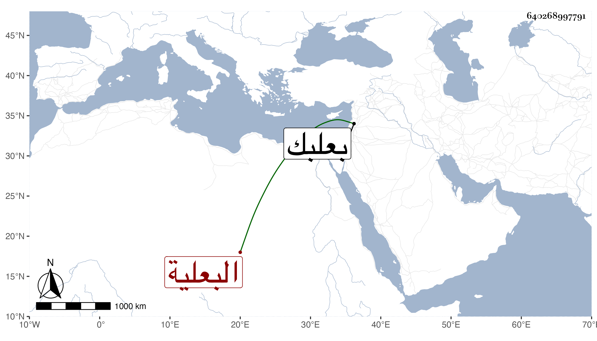

0902Sakhawi.DawLamic.ITO20230111-ara1.EIS1600.640268997791
Biography ID: 640268997791
11
آمنة ابنة الصدر أحمد بن البدر محمد بن زيد البعلية خالة قاضي الحنابلة ببعلبك ، سمعت في جمادى الثانية سنة خمس وتسعين وسبعمائة على أبي الفرج عبد الرحمن بن محمد بن الزعبوب بعض صحيح البخاري قال أنا الحجار وأجازت لنا ، وكانت أصيلة خيرة ، ماتت بعيد الستين تقريبا رحمها الل .ه
